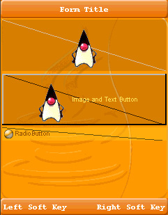

| LWUIT Developer’s Guide |
| C H A P T E R 7 |
Painter is an interface that can be used to draw on a component background. The Painter draws itself and then the component draws itself on top within the restrictions of the component bounds. One of the biggest advantages of using a painter is that you can write arbitrary code to draw the component background. An example of such code might be a gradient background for a component, or tiling (using an image to tile the component background). Using a generic painter allows you to reuse background painters for various components.
Note - To view the painter drawing, a component must have some level of transparency. |
To clarify these points, assume you want to make a painter that draws a diagonal line in the background of a component. This kind of painting is vectoring since you are specifying the absolute coordinates and dimensions of a component. You can reuse the painter for other components.
The Painter code might look like the following example:
Painter diagonalPainter = new Painter() {
public void paint(Graphics g, Rectangle rect) {
g.drawLine(rect.getX(),
rect.getY(),
rect.getX() + rect.getSize().getWidth(),
rect.getY() + rect.getSize().getHeight());
}
};
To use the diagonalPainter you created, use it as the component background painter:
myComponent.getStyle().setBgPainter(diagonalPainter);
Let's create a Label, Button and a RadioButton and set their background painter with the above diagonalPainter.
....
Label myLabel = new Label(Image.createImage("/images/duke.png"));
myLabel.setAlignment(Component.CENTER);
myLabel.getStyle().setBgTransparency(100);
myLabel.getStyle().setBgPainter(diagonalPainter);
....
Button myButton = new Button("Image and Text Button");
myButton.setIcon(Image.createImage("/images/duke.png"));
myButton.setAlignment(Component.CENTER);
myButton.getStyle().setBgTransparency(100);
myButton.getStyle().setBgPainter(diagonalPainter);
....
RadioButton myRadioButton = new RadioButton("RadioButton");
myRadioButton.getStyle().setBgTransparency(100);
myRadioButton.getStyle().setBgPainter(diagonalPainter);
....
The three components are shown in FIGURE 7-1.
As a result, you see a diagonal line that is painted in the components’ background (behind the Duke images and text).
Sometimes a single painter is not enough to represent complex drawing logic necessary for an application's needs. The painter chain allows you to bind together several painters and present them as one. This can be used to separate responsibilities. For example, one painter can draw a background image while another painter can highlight validation errors.
To create a painter chain just use:
PainterChain chain = new PainterChain(new Painter[]{painter1, painter2});
|
The glass pane is a painter that is drawn on top of the form. The form cannot paint over the glass panel! This allows creating very unique visual effects for an application and allows a developer to implement functionality such as validation errors, or special effects such as fading tooltips.A glass pane can be installed using a painter chain to prevent a new glasspane from overriding the already installed glass pane.
To install a glass pane invoke:
Painter glassPane = ...; myForm.setGlassPane(glassPane); |
Use this code to install a glass pane without overriding an existing glass pane (this method works correctly even if a glass pane is not installed):
Painter glassPane = ...; PainterChain.installGlassPane(myForm, glassPane); |
| LWUIT Developer’s Guide | 12-11-09 |
Copyright © 2009, Sun Microsystems, Inc. All rights reserved.